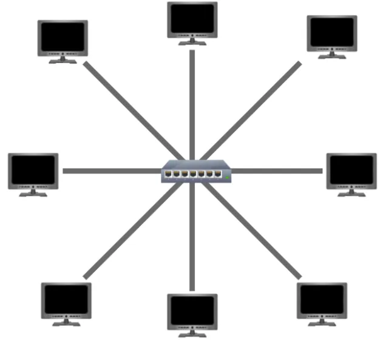

The main premise of a star topology is that devices are individually connected via a central networking device such as a switch or hub. This topology is the most commonly found today because of its reliability and scalability — despite the cost.
Any information sent to a device in this topology is sent via the central device to which it connects. Let’s explore some of these advantages and disadvantages of this topology below:
Because more cabling & the purchase of dedicated networking equipment is required for this topology, it is more expensive than any of the other topologies. However, despite the added cost, this does provide some significant advantages. For example, this topology is much more scalable in nature, which means that it is very easy to add more devices as the demand for the network increases.
